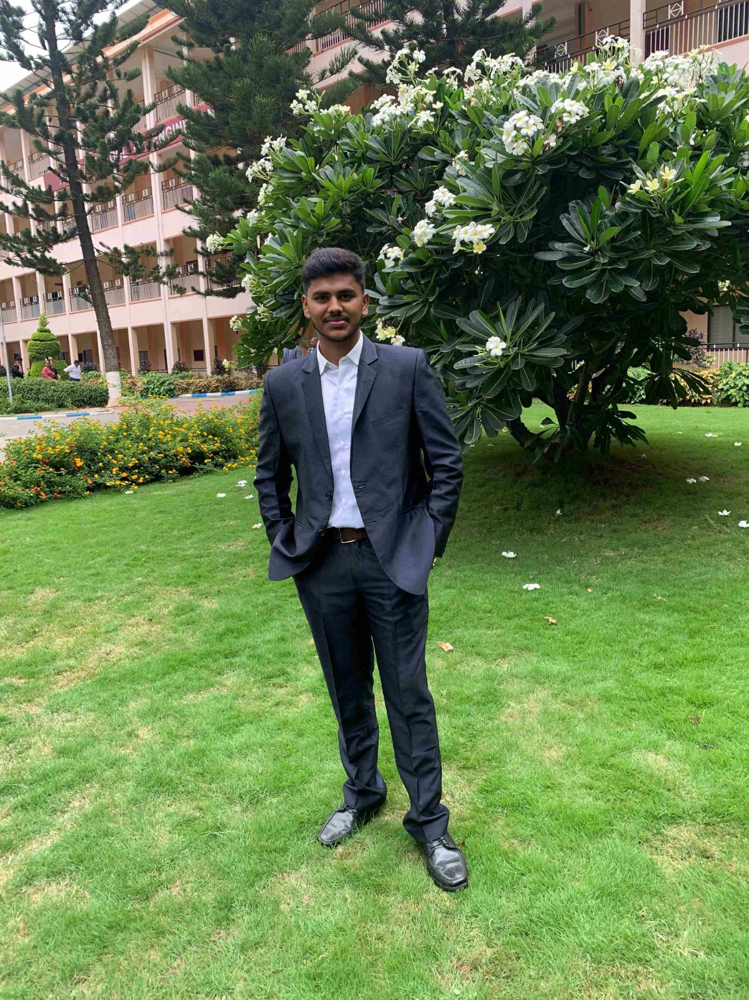

Photography
Unedited frames, original proportions—I capture the quiet tension of a moment before it slips away.
Computer Science Graduate
I study hard problems until they become something a person can use — a model, a service, or a clearer picture of the world.
Computer Science graduate passionate about software development, emerging technologies, and continuous learning. Beyond technology, I have a keen passion for photography and capturing beautiful moments.

Education and background
Sent to a boarding school at six, I grew up in a crucible that killed excuses early. Standing alone at that age teaches you to read a room, adapt fast, and own the weight when things turn rough.
That edge governs how I build in computer science—no shortcuts, only proof that holds up, clarity on why a system decides what it does, and raw ideas forged into software people can actually open. I don't build for applause in a vacuum; I build until the system answers every question and survives every test.
The best way to predict the future is to invent it.
Unedited frames, original proportions—I capture the quiet tension of a moment before it slips away.
No guesswork, no half-measures—I dissect the core problem, wire up the fundamentals, and build until the system proves itself.
Forged in Amazon ML Summer Camp and Flipkart Grid 5.0; backed by AWS, Google AI, and Kaggle
2021 — 2025
Amrita Vishwa Vidyapeetham, Bengaluru
2019 — 2021
Narayana Junior College, Hyderabad
2018 — 2019
Montessori High School, Kurnool
Technical and professional
The core languages, frameworks, and tools I use to turn ideas into working systems.
Projects, research, and certifications
Systems built from scratch, peer-reviewed research, and credentials earned along the way—work that speaks for itself.
—
I developed a hybrid Vision Transformer–ResNet model in Python to classify nine skin diseases. The project includes LIME-based explainability. On the final-year-project Kaggle dataset, it outperformed EfficientNet, DenseNet, and a standalone Vision Transformer.
—
I built a full-stack smart agriculture platform with Angular and Python. It includes a responsive interface, REST API integration, and an AI chatbot for crop recommendations, weather analytics, soil monitoring, and market insights.
Also presented as a paper at the International Conference on Machine Learning and Data Engineering in April 2025. Read the paper.
—
I built a Python-based serverless system on AWS, using Amazon Rekognition, Lambda, and API Gateway to analyze multiple images. The system is aimed at scalable industrial quality control and faster defect detection.
Agri Assist: An AI Integrated Farmer Assistant
International Conference on Machine Learning and Data Engineering
A Holistic Approach to Handling Metallic Waste for Environmental Sustainability
3rd International Conference for Advancement in Technology (ICONAT)
Image Denoising using Multiscale Transforms
The 15th International IEEE Conference on Computing, Communication and Networking Technologies
Personal work
Between building systems, I capture still moments—no crops, no altered ratios, just the frame as it happened. Select any frame to expand.
A concise overview of my engineering background, technical stack, published research, and credentials.
Email, LinkedIn, and GitHub
Open to full-time engineering roles, technical collaborations, and conversations worth having. Reach out directly.